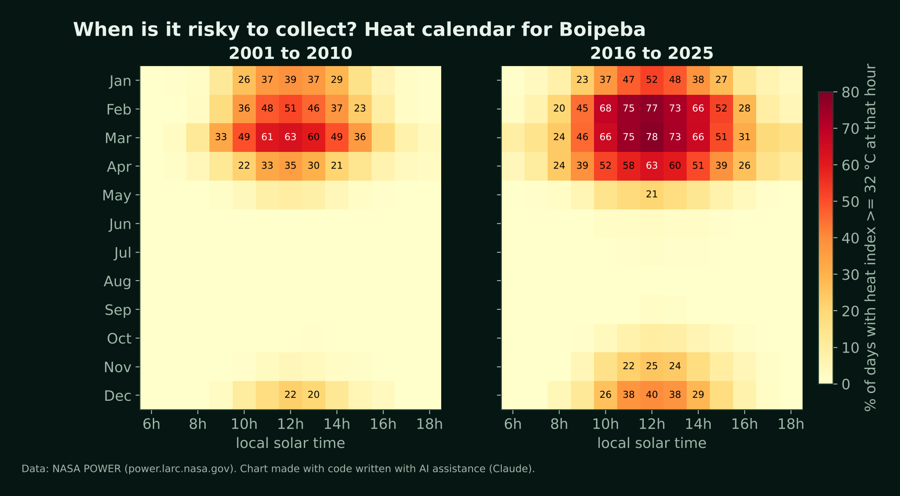

Case study: Boipeba Island, Bahia, Brazil
The globe above answers four questions for any place on Earth: what is changing, where, how much, and is the change statistically significant. We built it for Boipeba Island, Brazil, where our community recycling project works, and found that dangerous heat for outdoor workers has doubled.
Team Raízes do Futuro: Milena Calasans, Maria Clara Bastos, Talyta Silva
The four answers for Boipeba
Raízes do Futuro, winner of the UNICEF Brazil Youth Challenge Blockchain 2026, organises validated waste collection on Boipeba. Collectors work outdoors, on foot and by boat. We asked what 45 years of NASA data say about the climate they work in.
Days when the heat index reaches 32 °C (NWS "extreme caution" for outdoor work) doubled: from 64 to 132 days a year.
Every unique NASA POWER cell on the Baixo Sul coast shows significant warming, +0.19 to +0.40 °C per decade.
Mean daily maximum: 28.3 °C in 1981 to 1990 vs 29.6 °C in 2016 to 2025. Hot days went from 24 to 110 a year.
Mann-Kendall with autocorrelation correction. Pettitt change points: hot days jump after 2004, dangerous heat days after 2018.
The people side: heat risk for collectors


What, how much and since when


Where


NASA POWER shows annual rainfall at Boipeba falling from about 1,880 mm (1981 to 1990) to about 910 mm (2016 to 2025). Northeast Brazil did suffer severe droughts in 2012 to 2017, but a halving is larger than expected, and reanalysis rainfall trends can carry artifacts from changes in the observing system. We report it as a signal that still needs confirmation with GPM IMERG and local gauges.
From trends to action
| Trend detected | What Raízes do Futuro does with it |
|---|---|
| Dangerous heat days doubled; risky season now November to May | Heat-aware collection calendar: finish routes by 8 a.m. (February to April) or 9 a.m. (rest of the risky season), water and shade at drop-off points, pause rule when the heat index forecast passes 32 °C. |
| Warming everywhere on the coast | Evidence for partners and funders that climate adaptation belongs in the Children's Fund priorities for health and education. |
| Possible drying (to be validated) | Cross-check with GPM IMERG and local gauges, then relate rainfall to the waste reaching mangroves and beaches using the project's collection records. |
| Any community can run it | The globe above works for any place on Earth, with the same open code, so other coastal projects can do the same. |
Methods and limits
- Data: NASA POWER monthly (1981 to 2025), daily (1981 to 2025) and hourly (2001 to 2025) point data:
T2M,T2M_MAX,T2M_MIN,PRECTOTCORR,RH2M. - Trend: Mann-Kendall with the Hamed and Rao (1998) correction for autocorrelation; Theil-Sen slope with 95% confidence interval.
- Since when: Pettitt (1979) change-point test.
- Where: Benjamini-Hochberg false discovery rate (q = 0.05) across unique grid cells.
- Heat index: NOAA/NWS Rothfusz regression with standard adjustments; 32 °C is the NWS "extreme caution" level.
- Limits: NASA POWER comes from reanalysis on a 0.5° x 0.625° grid that mixes island, sea and mainland, which smooths the daily heat peak, so real heat on land is likely higher than shown. Rainfall trends are flagged, not claimed. The tool's heat calendar compares two 5-year windows and is not a significance test. Trends are not forecasts.
- Live tool: clicking the globe outlines the NASA POWER cell (0.5° x 0.625°) that contains the point and requests its annual series from the NASA POWER monthly API; "Scan the area" tests that cell and its 8 neighbours with false discovery rate control and colours them on the map; the heat calendar compares 2001 to 2005 with 2021 to 2025 from the hourly API (a month is risky when at least 20% of its days reach 32 °C at some hour); reports and CSV are generated in the browser. At most 3 requests run at once and each answer is cached for the session.
- Reproducible: all Python code is in
analysis/(shared statistics instats.py); the live tool runs the same tests in JavaScript (js/stats.js) and a Node test (tests/parity.test.mjs) checks that it reproduces the Python results for Boipeba.
What already exists
Climate trend tools exist, mostly for researchers: the KNMI Climate Explorer computes trends and significance for any location, NOAA Climate at a Glance publishes regional time series, and Google Earth Engine or Climate Engine run Mann-Kendall and Sen's slope with an account and code. This tool brings the same rigour to any community without login or code, answers all four questions plus "since when" in plain language, and turns the result into a decision: when it is safe to work outdoors.
NASA data and resources
- NASA POWER Monthly API: https://power.larc.nasa.gov/api/temporal/monthly/point (request for Boipeba)
- NASA POWER Daily API: https://power.larc.nasa.gov/api/temporal/daily/point (request for Boipeba)
- NASA POWER Hourly API: https://power.larc.nasa.gov/api/temporal/hourly/point (request for Boipeba, one year)
- NASA POWER Data Access Viewer: https://power.larc.nasa.gov/data-access-viewer/ · Documentation: https://power.larc.nasa.gov/docs/